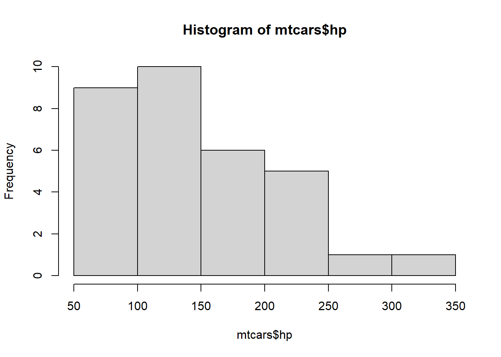

A soma de todos os lados de um dado padrão é 21
INTRODUÇÃO
A base de dados r mtcars consiste de uma planilha disponível no base r cujo os dados foram extraídos da revista Motor Trend US magazine de 1974. Os dados inseridos consistem do consumo de combustível, 10 características físicas e/ou performance de 32 automóveis (modelos de 1973-1974). A planilha do r mtcars consiste em 32 obsevações (modelo do carro) com 11 variáveis numéricas.
mpg = Milhas por galão (do inglês Miles/(US) gallon); cyl = Número de cilindos (do inglês Number of cylinders); disp = Deslocamento do motor (cu.in.)(do inglês Displacement); hp = Cavalos de potência (do inglês Gross horsepower); drat = Razão do eixo traseiro (do inglês Rear axle ratio); wt = Peso (1000 lbs)(do inglês Weight); qsec = Tempo para percorrer 1/4 de uma milha (do inglês 1/4 mile time); vs = Motor (0 = V-shaped, 1 = straight)(do ingês Engine); am = Transmissão (0 = automatic, 1 = manual)(do inglês Transmission); gear = Número de eixos dianteiros (do inglês Number of forward gears); carb = Número de carburadores (do inglês Number of carburetors).
Código
ggplot(mtcars, aes(x = factor(cyl))) +
geom_bar() +
labs(x = "Número de cilindros",
y = "Contagem de carros",
title = "Contagem de carros por número de cilindros") +
ylim(0, 15) +
theme(plot.title = element_text(hjust = 0.5))
Código
mtcars %>%
ggplot(aes(wt,mpg)) +
geom_point() +
labs(x = "Peso",
y = "Milhas por galão",
title = "Milhas por galão x Peso")+
theme(plot.title = element_text(hjust = 0.5))
Este gráfico de dispersão apresenta a relação (correlação negativa) entre o peso de um carro e sua eficiência de combustível, medida em milhas por galão (mpg). Cada ponto no gráfico representa um carro, onde o eixo horizontal representa o peso do carro e o eixo vertical representa o número de milhas que o carro pode percorrer com um galão de combustível. Observando a dispersão dos pontos, podemos visualizar como o peso de um carro pode afetar sua eficiência de combustível. Essa visualização pode ajudar a identificar tendências ou padrões na relação entre o peso e a eficiência de combustível dos carros.
Código
ggplot(mtcars, aes(x = factor(cyl), y = mpg)) +
geom_boxplot() +
labs(x = "Número de cilindros",
y = "Consumo de combustível (mpg)",
title = "Distribuição do consumo de combustível por número de cilindros") +
theme(plot.title = element_text(hjust = 0.5))
apesar da maioria dos carros com 8 cilindros terem um consumo de combustível semelhante, há alguns casos extremos com um consumo muito alto ou muito baixo em relação à média. Esses pontos discrepantes podem ser de interesse para uma análise mais aprofundada, pois podem indicar características incomuns nos veículos com 8 cilindros que os diferenciam dos demais.
Código
mtcars %>%
explain_tree(target = hp, minsplit=15)
Existe uma relação entre potência e outras variáveis como número de cilindros?
Todos os carros têm uma potência média de 147 (mostrada no nó superior). Em seguida, os dados são divididos por cilindro. Carros com cilindragem <7 (56% de todos os carros) têm uma potência média de 98 e carros com cilindragem >=7 (44% de todos os carros) têm uma potência média de 209.
As variáveis cilindragem (cyl) e consumo de combustível (mpg) podem explicar a potência. Os nós inferiores estão mostrando uma potência média de 80, 121 e 209.
No diagrama, são mostrados valores arredondados.
Código
ggplot(mtcars, aes(x = mpg, y = hp, color = factor(cyl))) +
geom_point() +
geom_smooth(method = "lm", se = FALSE) +
labs(title = "Gráfico de Dispersão: Potência vs. Consumo de Combustível",
x = "Milhas por Galão (mpg)",
y = "Potência (hp)",
color = "Número de Cilindros") +
scale_color_manual(values = c("blue", "green", "red"))`geom_smooth()` using formula = 'y ~ x'
Código
# Ajustando o modelo de regressão: O ~ separa a variável dependente (à esquerda) das variáveis independentes (à direita).
modelo <- lm(hp ~ cyl + mpg, data = mtcars)
summary(modelo)
Call:
lm(formula = hp ~ cyl + mpg, data = mtcars)
Residuals:
Min 1Q Median 3Q Max
-53.72 -22.18 -10.13 14.47 130.73
Coefficients:
Estimate Std. Error t value Pr(>|t|)
(Intercept) 54.067 86.093 0.628 0.53492
cyl 23.979 7.346 3.264 0.00281 **
mpg -2.775 2.177 -1.275 0.21253
---
Signif. codes: 0 '***' 0.001 '**' 0.01 '*' 0.05 '.' 0.1 ' ' 1
Residual standard error: 38.22 on 29 degrees of freedom
Multiple R-squared: 0.7093, Adjusted R-squared: 0.6892
F-statistic: 35.37 on 2 and 29 DF, p-value: 1.663e-08O modelo de regressão linear tenta prever a potência dos carros (hp) com base no número de cilindros (cyl) e no consumo de combustível (mpg) utilizando o conjunto de dados mtcars.
Logo o número de cilindros (cyl) parece ser uma variável importante na predição da potência (hp) dos carros, enquanto o consumo de combustível (mpg) não parece ter uma influência significativa na potência após controlar para o número de cilindros.
Código
# Valores específicos de cyl e mpg para fazer previsões
novos_dados <- data.frame(cyl = c(4, 6), mpg = c(25, 30))
previsoes <- predict(modelo, newdata = novos_dados)
print(previsoes) 1 2
80.61187 114.69528 Para um carro com 4 cilindros e 25 mpg, a previsão de potência (hp) é aproximadamente 80.61.
Para um carro com 6 cilindros e 30 mpg, a previsão de potência (hp) é aproximadamente 114.70.
Foi criado um novo conjunto de dados contendo os valores específicos de cyl e mpg para os quais você deseja fazer previsões. Aqui, estamos fazendo previsões para carros com 4 cilindros e 25 mpg, e carros com 6 cilindros e 30 mpg.
Código
# Calculando a média da variável dependente (hp) para cada grupo de carros com o mesmo número de cilindros
media_real <- aggregate(hp ~ cyl, data = mtcars, FUN = mean)
# Exibindo a média calculada
print(media_real) cyl hp
1 4 82.63636
2 6 122.28571
3 8 209.21429